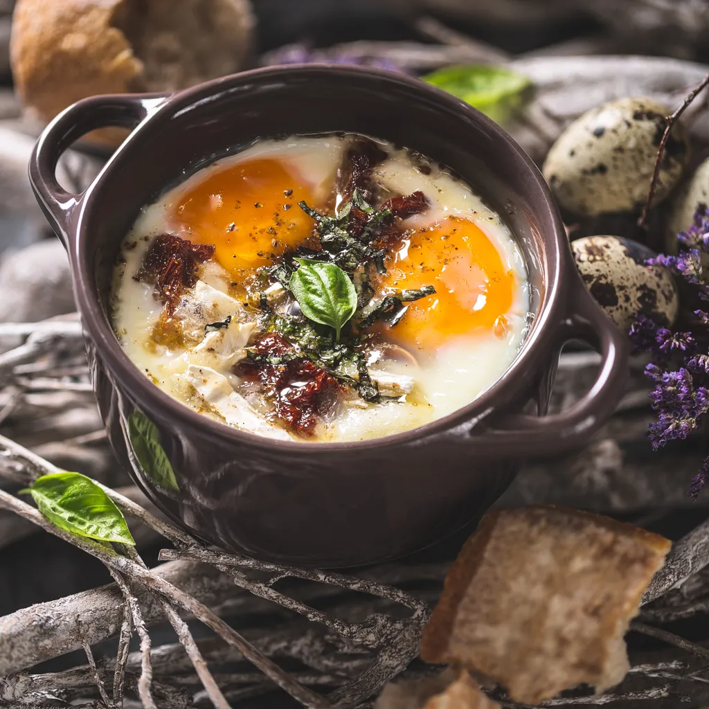

The oeufs cocotte is a classic French recipe that is simple and quick to make. Oeufs cocotte or eggs in pots provide an easy and delicate way of serving eggs for breakfast. Cocotte refers both to the method of baking individual eggs and the small, round baking vessels with handles on the sides.
Meal prep time : 25 minutes
Servings : 2